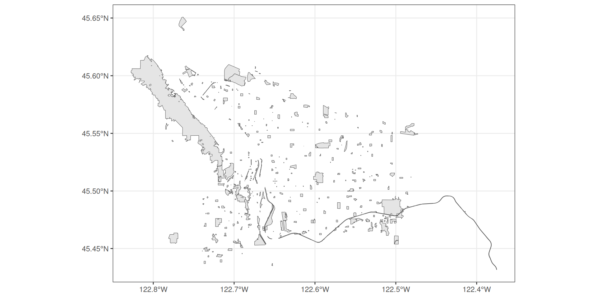
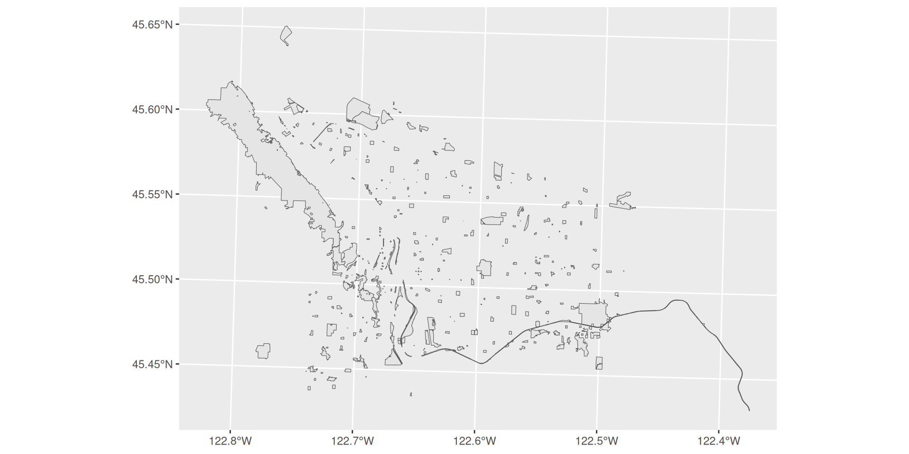
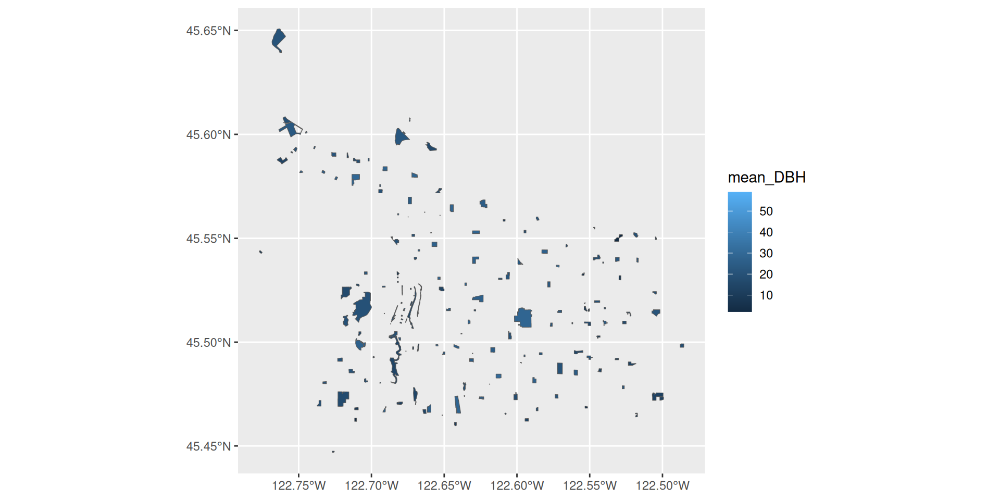
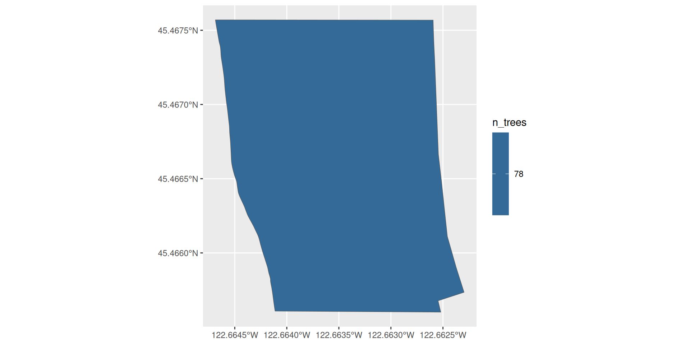
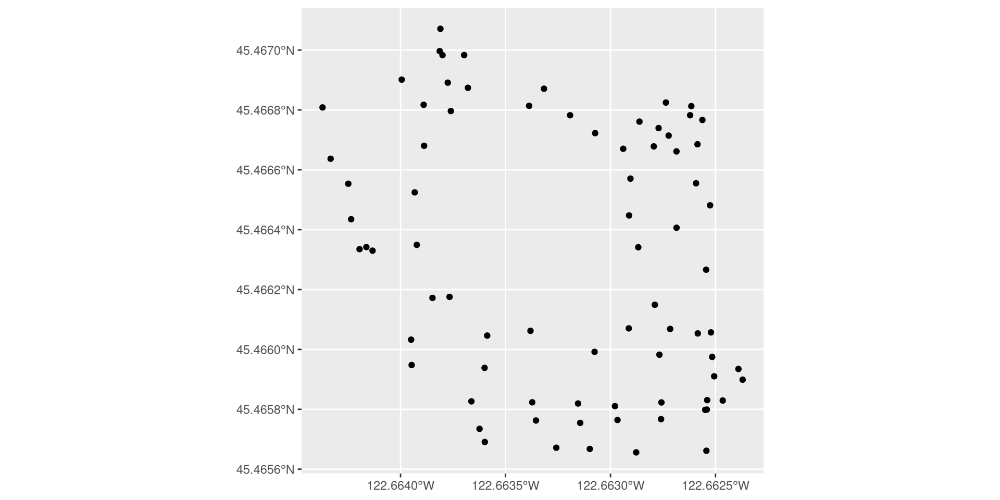
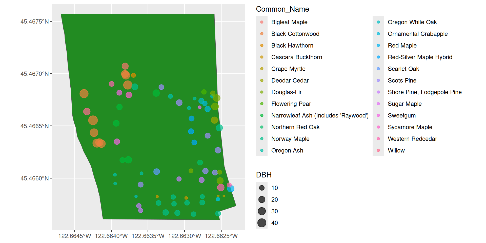

More graphics with ggplot2
Agenda
- Midterm reminder
- Spatial data with
sf - Discussion: any questions about spatial data and the upcoming midterm
Midterm II
- The second midterm is this Thursday, Nov 21st, during lab time.
- Closed book, closed notes.
- Handwritten “cheat sheet” allowed, just like Midterm I
- Same format as Midterm I: 5 questions, top 4 are graded.
sf
sf

sf
sf is an R package for handling spatial data. It includes functions to read, write, modify, and plot spatial data.
To install sf, you can run install.packages("sf"), but will likely need to install a few more things if you are running Linux.
After you’ve installed sf, try loading the package:
Reading spatial data
Consider the following dataset:
https://www.portlandmaps.com/metadata/index.cfm?action=DisplayLayer&LayerID=52451
Reading spatial data
Now that we’ve taken a look at the data, downloaded and unzipped the file, let’s load it with sf
Reading layer `Parks' from data source
`/Users/graysonwhite/Documents/for128-org/FOR128.github.io/slides/Parks/Parks.shp'
using driver `ESRI Shapefile'
Simple feature collection with 318 features and 6 fields
Geometry type: MULTIPOLYGON
Dimension: XY
Bounding box: xmin: -13673090 ymin: 5689736 xmax: -13622730 ymax: 5724555
Projected CRS: WGS 84 / Pseudo-MercatorExamining spatial data
Simple feature collection with 318 features and 6 fields
Geometry type: MULTIPOLYGON
Dimension: XY
Bounding box: xmin: -13673090 ymin: 5689736 xmax: -13622730 ymax: 5724555
Projected CRS: WGS 84 / Pseudo-Mercator
# A tibble: 318 × 7
OBJECTID PROPERTYID NAME ACRES Shape_Leng Shape_Area
<int> <int> <chr> <dbl> <dbl> <dbl>
1 1 48 Albert Kelly Park 12.1 1439. 99518.
2 2 49 Alberta Park 16.4 1597. 135442.
3 3 51 April Hill Park 10.1 1455. 83301.
4 4 52 Arbor Lodge Park 8.69 1089. 71784.
5 5 53 Argay Park 8.93 1172. 73685.
6 6 1221 Arnold Creek Natural Area 0.479 258. 3940.
7 7 1218 Beach Community Garden 0.413 244. 3411.
8 8 57 Berkeley Park 6.48 1150. 53338.
9 9 59 Berrydale Park 6.31 1110. 52025.
10 10 63 Brentwood Park 14.1 1703. 115738.
# ℹ 308 more rows
# ℹ 1 more variable: geometry <MULTIPOLYGON [m]>[1] "sf" "tbl_df" "tbl" "data.frame"Examining spatial data
sf [318 × 7] (S3: sf/tbl_df/tbl/data.frame)
$ OBJECTID : int [1:318] 1 2 3 4 5 6 7 8 9 10 ...
$ PROPERTYID: int [1:318] 48 49 51 52 53 1221 1218 57 59 63 ...
$ NAME : chr [1:318] "Albert Kelly Park" "Alberta Park" "April Hill Park" "Arbor Lodge Park" ...
$ ACRES : num [1:318] 12.09 16.4 10.12 8.69 8.93 ...
$ Shape_Leng: num [1:318] 1439 1597 1455 1089 1172 ...
$ Shape_Area: num [1:318] 99518 135442 83301 71784 73685 ...
$ geometry :sfc_MULTIPOLYGON of length 318; first list element: List of 1
..$ :List of 1
.. ..$ : num [1:38, 1:2] -13660625 -13660626 -13660545 -13660425 -13660339 ...
..- attr(*, "class")= chr [1:3] "XY" "MULTIPOLYGON" "sfg"
- attr(*, "sf_column")= chr "geometry"
- attr(*, "agr")= Factor w/ 3 levels "constant","aggregate",..: NA NA NA NA NA NA
..- attr(*, "names")= chr [1:6] "OBJECTID" "PROPERTYID" "NAME" "ACRES" ...Spatial data structure
When you load in spatial data with sf, you get a modified version of a tibble to work with. Full functionality of dplyr, tidyr, ggplot2, etc. is thus available for sf objects.
Plotting spatial data with ggplot2
By default, geom_sf() takes a “geometry” aesthetic mapping. It will assign this mapping automatically.
Plotting spatial data with ggplot2
Plotting spatial data with ggplot2
Equivalently, you could write
Plotting spatial data with ggplot2

Plotting spatial data with ggplot2
You can add layers just like any ggplot object
Plotting spatial data with ggplot2

Plotting spatial data with ggplot2
You can specify aesthetic mappings just like any ggplot object
Plotting spatial data with ggplot2
Plotting spatial data with ggplot2
You can set values just like an ggplot object
Plotting spatial data with ggplot2
Projections
We live on a globe, but we like to represent where we live on flat maps.
Therefore, we need to choose how to project this curved surface onto a map.
Spatial data has a projection chosen when loaded. With
sf, we can easily modify the projection.
Projections
Coordinate Reference System:
User input: WGS 84 / Pseudo-Mercator
wkt:
PROJCRS["WGS 84 / Pseudo-Mercator",
BASEGEOGCRS["WGS 84",
ENSEMBLE["World Geodetic System 1984 ensemble",
MEMBER["World Geodetic System 1984 (Transit)"],
MEMBER["World Geodetic System 1984 (G730)"],
MEMBER["World Geodetic System 1984 (G873)"],
MEMBER["World Geodetic System 1984 (G1150)"],
MEMBER["World Geodetic System 1984 (G1674)"],
MEMBER["World Geodetic System 1984 (G1762)"],
MEMBER["World Geodetic System 1984 (G2139)"],
ELLIPSOID["WGS 84",6378137,298.257223563,
LENGTHUNIT["metre",1]],
ENSEMBLEACCURACY[2.0]],
PRIMEM["Greenwich",0,
ANGLEUNIT["degree",0.0174532925199433]],
ID["EPSG",4326]],
CONVERSION["Popular Visualisation Pseudo-Mercator",
METHOD["Popular Visualisation Pseudo Mercator",
ID["EPSG",1024]],
PARAMETER["Latitude of natural origin",0,
ANGLEUNIT["degree",0.0174532925199433],
ID["EPSG",8801]],
PARAMETER["Longitude of natural origin",0,
ANGLEUNIT["degree",0.0174532925199433],
ID["EPSG",8802]],
PARAMETER["False easting",0,
LENGTHUNIT["metre",1],
ID["EPSG",8806]],
PARAMETER["False northing",0,
LENGTHUNIT["metre",1],
ID["EPSG",8807]]],
CS[Cartesian,2],
AXIS["easting (X)",east,
ORDER[1],
LENGTHUNIT["metre",1]],
AXIS["northing (Y)",north,
ORDER[2],
LENGTHUNIT["metre",1]],
USAGE[
SCOPE["Web mapping and visualisation."],
AREA["World between 85.06°S and 85.06°N."],
BBOX[-85.06,-180,85.06,180]],
ID["EPSG",3857]]Projections
Projections

Projections
Projections
Joining with other data
Let’s join this spatial data to the pdxTrees parks data
# A tibble: 25,534 × 34
Longitude Latitude UserID Genus Family DBH Inventory_Date Species
<dbl> <dbl> <chr> <chr> <chr> <dbl> <dttm> <chr>
1 -123. 45.6 1 Pseudotsu… Pinac… 37.4 2017-05-09 00:00:00 PSME
2 -123. 45.6 2 Pseudotsu… Pinac… 32.5 2017-05-09 00:00:00 PSME
3 -123. 45.6 3 Crataegus Rosac… 9.7 2017-05-09 00:00:00 CRLA
4 -123. 45.6 4 Quercus Fagac… 10.3 2017-05-09 00:00:00 QURU
5 -123. 45.6 5 Pseudotsu… Pinac… 33.2 2017-05-09 00:00:00 PSME
6 -123. 45.6 6 Pseudotsu… Pinac… 32.1 2017-05-09 00:00:00 PSME
7 -123. 45.6 7 Pseudotsu… Pinac… 28.4 2017-05-09 00:00:00 PSME
8 -123. 45.6 8 Pseudotsu… Pinac… 27.2 2017-05-09 00:00:00 PSME
9 -123. 45.6 9 Pseudotsu… Pinac… 35.2 2017-05-09 00:00:00 PSME
10 -123. 45.6 10 Pseudotsu… Pinac… 32.4 2017-05-09 00:00:00 PSME
# ℹ 25,524 more rows
# ℹ 26 more variables: Common_Name <chr>, Condition <chr>, Tree_Height <dbl>,
# Crown_Width_NS <dbl>, Crown_Width_EW <dbl>, Crown_Base_Height <dbl>,
# Collected_By <chr>, Park <chr>, Scientific_Name <chr>,
# Functional_Type <chr>, Mature_Size <fct>, Native <chr>, Edible <chr>,
# Nuisance <chr>, Structural_Value <dbl>, Carbon_Storage_lb <dbl>,
# Carbon_Storage_value <dbl>, Carbon_Sequestration_lb <dbl>, …Joining with other data
We need to find a “key” to join these data
Joining with other data
[1] "Albert Kelly Park" "Alberta Park" "Ankeny Plaza"
[4] "April Hill Park" "Arbor Lodge Park" "Argay Park" [1] "A Park" "Albert Kelly Park"
[3] "Alberta Park" "Alder Ridge Natural Area"
[5] "Ankeny Plaza" "April Hill Park" It looks like this might do!
Joining with other data
Joining with other data
# A tibble: 25,534 × 40
Longitude Latitude UserID Genus Family DBH Inventory_Date Species
<dbl> <dbl> <chr> <chr> <chr> <dbl> <dttm> <chr>
1 -123. 45.6 1 Pseudotsu… Pinac… 37.4 2017-05-09 00:00:00 PSME
2 -123. 45.6 2 Pseudotsu… Pinac… 32.5 2017-05-09 00:00:00 PSME
3 -123. 45.6 3 Crataegus Rosac… 9.7 2017-05-09 00:00:00 CRLA
4 -123. 45.6 4 Quercus Fagac… 10.3 2017-05-09 00:00:00 QURU
5 -123. 45.6 5 Pseudotsu… Pinac… 33.2 2017-05-09 00:00:00 PSME
6 -123. 45.6 6 Pseudotsu… Pinac… 32.1 2017-05-09 00:00:00 PSME
7 -123. 45.6 7 Pseudotsu… Pinac… 28.4 2017-05-09 00:00:00 PSME
8 -123. 45.6 8 Pseudotsu… Pinac… 27.2 2017-05-09 00:00:00 PSME
9 -123. 45.6 9 Pseudotsu… Pinac… 35.2 2017-05-09 00:00:00 PSME
10 -123. 45.6 10 Pseudotsu… Pinac… 32.4 2017-05-09 00:00:00 PSME
# ℹ 25,524 more rows
# ℹ 32 more variables: Common_Name <chr>, Condition <chr>, Tree_Height <dbl>,
# Crown_Width_NS <dbl>, Crown_Width_EW <dbl>, Crown_Base_Height <dbl>,
# Collected_By <chr>, Park <chr>, Scientific_Name <chr>,
# Functional_Type <chr>, Mature_Size <fct>, Native <chr>, Edible <chr>,
# Nuisance <chr>, Structural_Value <dbl>, Carbon_Storage_lb <dbl>,
# Carbon_Storage_value <dbl>, Carbon_Sequestration_lb <dbl>, …[1] "spec_tbl_df" "tbl_df" "tbl" "data.frame" Oh no, it is no longer an sf object!
Easily convert back to an sf object
Simple feature collection with 25534 features and 39 fields (with 290 geometries empty)
Geometry type: MULTIPOLYGON
Dimension: XY
Bounding box: xmin: -13667490 ymin: 5692151 xmax: -13635000 ymax: 5724555
Projected CRS: WGS 84 / Pseudo-Mercator
# A tibble: 25,534 × 40
Longitude Latitude UserID Genus Family DBH Inventory_Date Species
<dbl> <dbl> <chr> <chr> <chr> <dbl> <dttm> <chr>
1 -123. 45.6 1 Pseudotsu… Pinac… 37.4 2017-05-09 00:00:00 PSME
2 -123. 45.6 2 Pseudotsu… Pinac… 32.5 2017-05-09 00:00:00 PSME
3 -123. 45.6 3 Crataegus Rosac… 9.7 2017-05-09 00:00:00 CRLA
4 -123. 45.6 4 Quercus Fagac… 10.3 2017-05-09 00:00:00 QURU
5 -123. 45.6 5 Pseudotsu… Pinac… 33.2 2017-05-09 00:00:00 PSME
6 -123. 45.6 6 Pseudotsu… Pinac… 32.1 2017-05-09 00:00:00 PSME
7 -123. 45.6 7 Pseudotsu… Pinac… 28.4 2017-05-09 00:00:00 PSME
8 -123. 45.6 8 Pseudotsu… Pinac… 27.2 2017-05-09 00:00:00 PSME
9 -123. 45.6 9 Pseudotsu… Pinac… 35.2 2017-05-09 00:00:00 PSME
10 -123. 45.6 10 Pseudotsu… Pinac… 32.4 2017-05-09 00:00:00 PSME
# ℹ 25,524 more rows
# ℹ 32 more variables: Common_Name <chr>, Condition <chr>, Tree_Height <dbl>,
# Crown_Width_NS <dbl>, Crown_Width_EW <dbl>, Crown_Base_Height <dbl>,
# Collected_By <chr>, Park <chr>, Scientific_Name <chr>,
# Functional_Type <chr>, Mature_Size <fct>, Native <chr>, Edible <chr>,
# Nuisance <chr>, Structural_Value <dbl>, Carbon_Storage_lb <dbl>,
# Carbon_Storage_value <dbl>, Carbon_Sequestration_lb <dbl>, …[1] "sf" "spec_tbl_df" "tbl_df" "tbl" "data.frame" Let’s check how many rows did not get joined
# A tibble: 290 × 34
Longitude Latitude UserID Genus Family DBH Inventory_Date Species
<dbl> <dbl> <chr> <chr> <chr> <dbl> <dttm> <chr>
1 -123. 45.6 3157 Acer Sapindaceae 17.1 2017-09-13 00:00:00 ACPL
2 -123. 45.6 3158 Acer Sapindaceae 17.7 2017-09-13 00:00:00 ACPL
3 -123. 45.6 3159 Acer Sapindaceae 11.1 2017-09-13 00:00:00 ACPL
4 -123. 45.6 3160 Acer Sapindaceae 13 2017-09-13 00:00:00 ACPL
5 -123. 45.6 3161 Acer Sapindaceae 9.5 2017-09-13 00:00:00 ACPL
6 -123. 45.6 3162 Acer Sapindaceae 19.6 2017-09-13 00:00:00 ACPL
7 -123. 45.6 3163 Acer Sapindaceae 13.2 2017-09-13 00:00:00 ACPL
8 -123. 45.6 3164 Acer Sapindaceae 14.4 2017-09-13 00:00:00 ACPL
9 -123. 45.6 3507 Acer Sapindaceae 19.5 2017-09-13 00:00:00 ACPL
10 -123. 45.6 3508 Acer Sapindaceae 15.4 2017-09-13 00:00:00 ACPL
# ℹ 280 more rows
# ℹ 26 more variables: Common_Name <chr>, Condition <chr>, Tree_Height <dbl>,
# Crown_Width_NS <dbl>, Crown_Width_EW <dbl>, Crown_Base_Height <dbl>,
# Collected_By <chr>, Park <chr>, Scientific_Name <chr>,
# Functional_Type <chr>, Mature_Size <fct>, Native <chr>, Edible <chr>,
# Nuisance <chr>, Structural_Value <dbl>, Carbon_Storage_lb <dbl>,
# Carbon_Storage_value <dbl>, Carbon_Sequestration_lb <dbl>, …Just 290 (out of ~25,000) rows, that is okay for our purposes.
Summarizing with our joined data
Simple feature collection with 174 features and 3 fields (with 9 geometries empty)
Geometry type: MULTIPOLYGON
Dimension: XY
Bounding box: xmin: -13667490 ymin: 5692151 xmax: -13635000 ymax: 5724555
Projected CRS: WGS 84 / Pseudo-Mercator
# A tibble: 174 × 4
Park mean_DBH n_trees geometry
<chr> <dbl> <int> <MULTIPOLYGON [m]>
1 Albert Kelly Park 20.5 260 (((-13660625 5698511, -13660626 5698522, …
2 Alberta Park 28.4 338 (((-13652823 5710560, -13652823 5710622, …
3 Ankeny Plaza 30.8 6 (((-13655615 5704121, -13655615 5704121, …
4 April Hill Park 18.9 34 (((-13662756 5695900, -13662757 5695832, …
5 Arbor Lodge Park 19.2 127 (((-13658347 5712261, -13658303 5712261, …
6 Argay Park 19.6 113 (((-13638648 5708598, -13638649 5708599, …
7 Berkeley Park 26.7 116 (((-13650497 5696405, -13650475 5696405, …
8 Berrydale Park 23.6 131 (((-13644658 5702841, -13644658 5702897, …
9 Bloomington Park 24.1 153 (((-13643128 5698057, -13643128 5698055, …
10 Brentwood Park 17.4 159 (((-13647741 5696172, -13647884 5696172, …
# ℹ 164 more rowsPlotting with our joined data
Plotting with our joined data

Plotting with our joined data
Plotting with our joined data

Look at the Sellwood Riverfront Park
Look at the Sellwood Riverfront Park

Look at the Sellwood Riverfront Park
# A tibble: 78 × 34
Longitude Latitude UserID Genus Family DBH Inventory_Date Species
<dbl> <dbl> <chr> <chr> <chr> <dbl> <dttm> <chr>
1 -123. 45.5 20625 Acer Sapin… 12.6 2019-08-14 00:00:00 ACFR
2 -123. 45.5 20627 Fraxinus Oleac… 6.2 2019-08-14 00:00:00 FRLA
3 -123. 45.5 20628 Acer Sapin… 6.5 2019-08-14 00:00:00 ACPL
4 -123. 45.5 20631 Thuja Cupre… 23.8 2019-08-14 00:00:00 THPL
5 -123. 45.5 20415 Populus Salic… 30.3 2019-08-14 00:00:00 POTR
6 -123. 45.5 20418 Pseudotsu… Pinac… 6.2 2019-08-14 00:00:00 PSME
7 -123. 45.5 20420 Acer Sapin… 23 2019-08-14 00:00:00 ACRU
8 -123. 45.5 20421 Acer Sapin… 10.1 2019-08-14 00:00:00 ACPL
9 -123. 45.5 14891 Pinus Pinac… 15.7 2019-08-14 00:00:00 PISY
10 -123. 45.5 14892 Quercus Fagac… 12.7 2019-08-14 00:00:00 QUGA
# ℹ 68 more rows
# ℹ 26 more variables: Common_Name <chr>, Condition <chr>, Tree_Height <dbl>,
# Crown_Width_NS <dbl>, Crown_Width_EW <dbl>, Crown_Base_Height <dbl>,
# Collected_By <chr>, Park <chr>, Scientific_Name <chr>,
# Functional_Type <chr>, Mature_Size <fct>, Native <chr>, Edible <chr>,
# Nuisance <chr>, Structural_Value <dbl>, Carbon_Storage_lb <dbl>,
# Carbon_Storage_value <dbl>, Carbon_Sequestration_lb <dbl>, …Let’s convert sellwood into an sf point object
sellwood_sf <- st_as_sf(
# a tibble
x = sellwood,
# the column names for lon/lat
coords = c("Longitude", "Latitude"),
# the projection those columns are in
crs = "EPSG:4269"
)
sellwood_sfSimple feature collection with 78 features and 32 fields
Geometry type: POINT
Dimension: XY
Bounding box: xmin: -122.6644 ymin: 45.46566 xmax: -122.6624 ymax: 45.46707
Geodetic CRS: NAD83
# A tibble: 78 × 33
UserID Genus Family DBH Inventory_Date Species Common_Name Condition
* <chr> <chr> <chr> <dbl> <dttm> <chr> <chr> <chr>
1 20625 Acer Sapin… 12.6 2019-08-14 00:00:00 ACFR Red-Silver… Fair
2 20627 Fraxin… Oleac… 6.2 2019-08-14 00:00:00 FRLA Oregon Ash Fair
3 20628 Acer Sapin… 6.5 2019-08-14 00:00:00 ACPL Norway Map… Poor
4 20631 Thuja Cupre… 23.8 2019-08-14 00:00:00 THPL Western Re… Fair
5 20415 Populus Salic… 30.3 2019-08-14 00:00:00 POTR Black Cott… Fair
6 20418 Pseudo… Pinac… 6.2 2019-08-14 00:00:00 PSME Douglas-Fir Fair
7 20420 Acer Sapin… 23 2019-08-14 00:00:00 ACRU Red Maple Fair
8 20421 Acer Sapin… 10.1 2019-08-14 00:00:00 ACPL Norway Map… Fair
9 14891 Pinus Pinac… 15.7 2019-08-14 00:00:00 PISY Scots Pine Fair
10 14892 Quercus Fagac… 12.7 2019-08-14 00:00:00 QUGA Oregon Whi… Fair
# ℹ 68 more rows
# ℹ 25 more variables: Tree_Height <dbl>, Crown_Width_NS <dbl>,
# Crown_Width_EW <dbl>, Crown_Base_Height <dbl>, Collected_By <chr>,
# Park <chr>, Scientific_Name <chr>, Functional_Type <chr>,
# Mature_Size <fct>, Native <chr>, Edible <chr>, Nuisance <chr>,
# Structural_Value <dbl>, Carbon_Storage_lb <dbl>,
# Carbon_Storage_value <dbl>, Carbon_Sequestration_lb <dbl>, …plotting sellwood_sf
plotting sellwood_sf

Plotting two sf objects
Plotting two sf objects
Plotting two sf objects
Plotting two sf objects
Plotting two sf objects
Plotting two sf objects
Plotting two sf objects
Plotting two sf objects
Plotting two sf objects
Plotting two sf objects

Questions
- Regarding
sfor spatial data? - Regarding the upcoming midterm?
- Regarding Lab 11?
Next time
- Review of material during lecture time
- Midterm during lab time